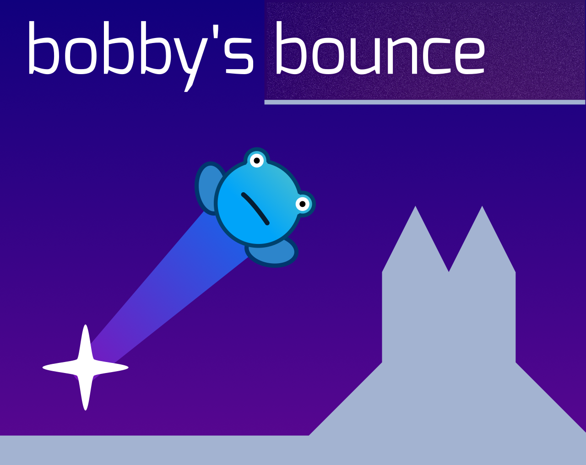
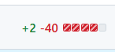

I've been learning coding / using Godot Engine for about a year and a half now, and I finally
figured out how you're actually supposed to organise a game.
bobby's bounce is a game I've been working on for about 4 months. The game is a level-based platformer with controls similar to Angry Birds.

This is my third game. Well, maybe second because my first was just a tutorial resprite. And shit, maybe it is my first game because my second game wasn't really a game. Damn!
Anyway, to get to the point of the title. This is super embarassing ngl.
Each level had their own script attached to it, with logic manually copied and pasted
onto each one.
The logic was the exact same...
...
Examples of said logic include:
So then, what did I do to fix this? REFACTORRRR!!!!!!
The big idea behind the refactor is to remove all the repetitive code from each level,
and move it to a scene that has the logic in it's own script. The scene can then be
instanced as a child node into each level providing logic to each of them.
(If none of this makes sense then the rest of this blog is not for you. read it anyway though..)
The biggest hurdle in my dumb brain was how I can access certain nodes' values
and functions if the script was not on the very most parent node of the scene.
The solution to this is to use variables.
That probably sounds obvious but I'm stupid (at least I'm not dumb, though)
In the instanced script, instead of using hard coded paths for nodes, you can
replace them with variables that you change in the level scene.
After figuring this out, I even managed to decrease one of the level's scripts by 80% !!

It was extremely satisfying to apply that change and see the number.
It made me feel a lot better lmao. You may judge me for terrible code,
but at least I figured it out.
By the way, 10 level demo for bobby's bounce out now👉https://siloricity0.itch.io/bounce